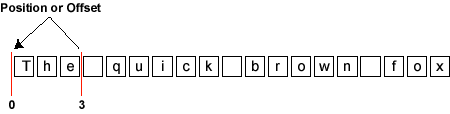
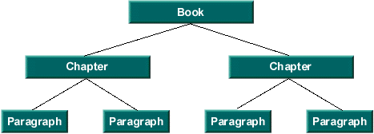
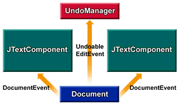
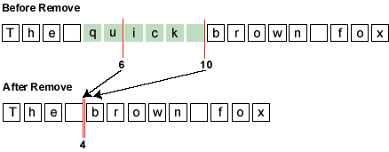
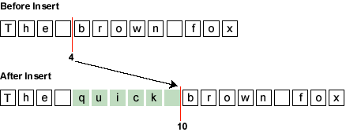

public interface Document
这是一Document文本作为文本组件容器摆动模型。这个接口的目标是规模从简单的需求（纯文本字段）到复杂的需要（例如HTML或XML文档）。
内容
在最简单的水平，文本可以被建模为一个线性序列的字符。支持国际化，Swing文本模型使用unicode字符。在一个文本组件中显示的字符的序列通常被称为组件的内容。
要参考序列中的位置，所使用的坐标是两个字符之间的位置。如下图所示的图表，在一个文本文档中的位置可以被称为一个位置，或一个偏移。这个位置是零基础的。

在这个例子中，如果一个文件的内容是序列“敏捷的棕色狐狸，“如前面的图所示，位置就在“的”是0，和位置的字“”，在空白后面是3后。在序列中的字符的整个序列被称为一个范围。
下面的方法可以访问构成内容的字符数据。
结构
文字是很少简单地代表特征的内容。相反，文本通常有一种与它相关的结构。究竟什么结构是建模是一个特定的文档实现。它可能是简单的，因为没有结构（即一个简单的文本字段），或者它可能是下面的图表。
Chapter->Paragraph" data-fanyi="1">
结构单元（即树的节点）是指由Element接口。每个元素都可以被标记为一组属性。这些属性（名称/值对）是由AttributeSet接口定义。
下面的方法提供对文档结构的访问。
突变
所有文档都需要能够添加和删除简单的文本。通常情况下，文本是通过键盘或鼠标的手势插入和删除的。插入或删除对文档结构的影响完全取决于文档的实现。
下面的方法与文档内容的突变有关：
insertString(int, java.lang.String, javax.swing.text.AttributeSet)remove(int, int)createPosition(int)通知
到Document突变必须传达给有兴趣的人士。变更通知如下所指定的JavaBeans事件模型的指南。在JavaBeans事件模型，一旦事件发送通知，所有的听众必须在任何进一步的突变发生的事件源的通知。此外，交货订单没有保证。
通知设置为两个独立的事件，DocumentEvent，和UndoableEditEvent。如果一个突变是一Document通过它的API，一个DocumentEvent将发送给所有注册的DocumentListeners。如果Document实现支持撤消/重做功能，一个UndoableEditEvent将发送给所有注册的UndoableEditListeners。如果撤消编辑的破灭，一个DocumentEvent应该开除的文件表明它已经改变了。然而在这种情况下，应该有自认为编辑是不是突变通过其API的Document变化产生的源头没有UndoableEditEvent。

参照上面的图，假设左边的成分变异的蓝色矩形表示文档对象。该文件会调度一个documentevent到组件视图和发送一个undoableeditevent聆听逻辑，它保持了历史缓冲区。
现在假设在右边显示的成分变异相同的文件。再次，文件的书面documentevent到组件视图和发送一个undoableeditevent聆听逻辑，是维护历史缓冲区。
如果历史缓冲区然后回滚（即最后一undoableedit挽回），一个documentevent发送到双方的观点，使它们都反映了突变的文件（即正确的成分的突变去除）。如果历史再次返回缓冲区的另一个变化，另一documentevent发送到双方的观点，使它们反映了突变的文档，左边的成分变异的去除。
与观察到的基因突变有关的方法是：
性能
文档实现通常会在运行时有一些与它们相关的属性集。两个众所周知的特性是StreamDescriptionProperty，可以用于描述Document来自哪里，和TitleProperty，可用来命名Document。有关的属性的方法是：
在Document类的更多信息，见The Swing Connection最特别的文章， The Element Interface。
| Modifier and Type | Field and Description |
|---|---|
static String |
StreamDescriptionProperty
用于初始化文档的流的描述的属性名称。
|
static String |
TitleProperty
该文档的标题的属性名称，如果有。
|
| Modifier and Type | Method and Description |
|---|---|
void |
addDocumentListener(DocumentListener listener)
注册给定的观察者，在对文档进行更改时，开始接收通知。
|
void |
addUndoableEditListener(UndoableEditListener listener)
寄存器给出的观察开始时接收通知撤消修改了该文件。
|
Position |
createPosition(int offs)
该方法允许应用程序在一个字符内容的序列中标记一个位置。
|
Element |
getDefaultRootElement()
返回视图应基于的根元素，除非提供了一些用于将视图赋给元素结构的其他机制。
|
Position |
getEndPosition()
返回表示文档结束的位置。
|
int |
getLength()
返回当前文档中的内容的字符数。
|
Object |
getProperty(Object key)
获取与文档相关联的属性。
|
Element[] |
getRootElements()
返回定义的根元素的所有元素。
|
Position |
getStartPosition()
返回表示文档开始的位置。
|
String |
getText(int offset, int length)
获取包含在文档中的特定部分的文本。
|
void |
getText(int offset, int length, Segment txt)
获取包含在文档中的特定部分的文本。
|
void |
insertString(int offset, String str, AttributeSet a)
插入一个内容字符串。
|
void |
putProperty(Object key, Object value)
将属性与文档关联。
|
void |
remove(int offs, int len)
移除文档内容的一部分。
|
void |
removeDocumentListener(DocumentListener listener)
将给定的观察名单的通知，将不再接收更新。
|
void |
removeUndoableEditListener(UndoableEditListener listener)
将给定的观察名单的通知，将不再接收更新。
|
void |
render(Runnable r)
允许该模型在并发的情况下安全地呈现，如果模型支持异步更新的话。
|
static final String StreamDescriptionProperty
static final String TitleProperty
int getLength()
void addDocumentListener(DocumentListener listener)
listener -观察者登记
removeDocumentListener(javax.swing.event.DocumentListener)
void removeDocumentListener(DocumentListener listener)
listener -观察者登记
addDocumentListener(javax.swing.event.DocumentListener)
void addUndoableEditListener(UndoableEditListener listener)
listener -观察者登记
UndoableEditEvent
void removeUndoableEditListener(UndoableEditListener listener)
listener -观察者登记
UndoableEditEvent
Object getProperty(Object key)
key -非
null性能的关键
putProperty(Object, Object)
void putProperty(Object key, Object value)
StreamDescriptionProperty和
TitleProperty。其他属性，如作者，也可以定义。
key -非
null性能的关键
value -属性值
getProperty(Object)
void remove(int offs,
int len)
throws BadLocationException
为了确保在并发的情况下的合理的行为，该事件被发送后发生突变。这意味着由时间通知去除出动，文件已经更新了createPosition任何痕迹已经改变了。对于一个去除，去除范围的结束是倒塌下来的范围的开始，并在去除范围内的任何标记倒塌下来的范围开始。

如果作为去除效果的文档结构的改变，什么的细节元素插入和删除响应的变化也将包含在生成的documentevent。它是由一个文档的实现，决定结构应该如何改变在一个删除。
如果文档支持撤销/重做，也会产生一个undoableeditevent。
offs -从开始> = 0的偏移
len -字符数删除> = 0
BadLocationException -部分的切除范围是不是有效的文档部分。在异常的位置是遇到的第一个错误位置。
DocumentEvent，
DocumentListener，
UndoableEditEvent，
UndoableEditListener
void insertString(int offset,
String str,
AttributeSet a)
throws BadLocationException

如果作为插入结果文档结构的改变，什么的细节元素插入和删除响应的变化也将包含在生成的documentevent。它是由一个文档的实现，来决定结构应该如何改变在一个插入。
如果文档支持撤销/重做，也会产生一个undoableeditevent。
offset -偏移到文档中插入内容> = 0。在给定位置跟踪更改或在给定位置的所有位置都将移动。
str -插入字符串
a -与插入的内容关联的属性。如果没有属性，这可能是空的。
BadLocationException -给定的插入位置不在有效的文档位置
DocumentEvent，
DocumentListener，
UndoableEditEvent，
UndoableEditListener
String getText(int offset, int length) throws BadLocationException
offset -偏移量为代表的文本> = 0所需的启动文件
length -给定字符串> = 0的长度
BadLocationException -部分给定的范围内没有有效的文档部分。在异常的位置是遇到的第一个错误位置。
void getText(int offset,
int length,
Segment txt)
throws BadLocationException
如果在txt参数partialreturn属性为false，在段返回的数据将是整个长度的要求，可以或不可以复制取决于数据存储。如果partialreturn属性为true，只有文字可以不退还的金额还创建一个副本。使用部分回报将提供更好的性能的情况下，大量的文档被扫描。下面是使用部分返回访问整个文档的一个例子：
int nleft = doc.getDocumentLength();
Segment text = new Segment();
int offs = 0;
text.setPartialReturn(true);
while (nleft > 0) {
doc.getText(offs, nleft, text);
// do someting with text
nleft -= text.count;
offs += text.count;
}
offset -偏移到文档所需的文本的开始> = 0
length -给定字符串> = 0的长度
txt -段对象返回的文本
BadLocationException -部分给定的范围内没有有效的文档部分。在异常的位置是遇到的第一个错误位置。
Position getStartPosition()
Position getEndPosition()
Position createPosition(int offs) throws BadLocationException
offs -从文档> = 0开始的偏移量
BadLocationException -如果给定的位置不在相关文件表示一个有效的位置
Element[] getRootElements()
通常情况下，将只有一个文档结构，但接口支持在文本数据中建立任意数量的结构预测。该文档可以有多个根元素来支持多个文档结构。一些例子可能：
Element getDefaultRootElement()
void render(Runnable r)
r -用来渲染模型
Runnable
Submit a bug or feature
For further API reference and developer documentation, see Java SE Documentation. That documentation contains more detailed, developer-targeted descriptions, with conceptual overviews, definitions of terms, workarounds, and working code examples.
Copyright © 1993, 2014, Oracle and/or its affiliates. All rights reserved.